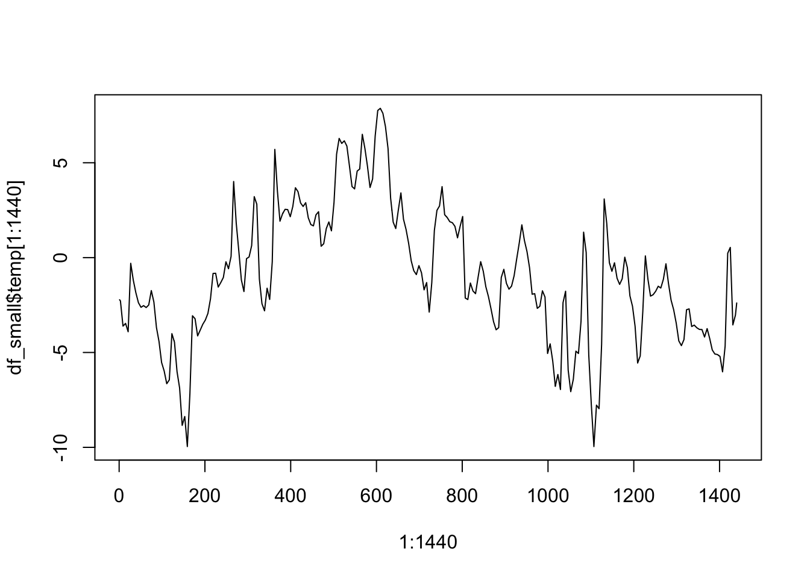

Chapter 2 Programming primers
Chapter lead author: Pepa Aran
TBC
Contents:
- Lecture (Beni): Models and data
- Base R
- variables, classes
- data frames
- loops
- conditional statements
- functions
- input and output
- intro to visualisation
- Performance assessment: link to my exercise, link to Dietze exercise
2.1 Learning objectives
After you’ve gone over the lecture and solved the exercises, you should be able to:
- Install and load libraries and packages
- Read, inspect, visualise and write data frames
- Use loops, conditional statements and functions in your code
- Organize your R project for data analysis
- Look for help
2.2 Tutorial
2.2.1 Libraries
Packages, sometimes called libraries, are collections of R functions, data, and complied code in a well-defined format. R comes with a standard set of packages (including base R, utils, stats…) and other packages targeted for specific applications are available for download and installation. Once installed, you need to load them each time you start a new R session to use them.
For example, the tidyverse package is used for data wrangling and will be covered in this course. You can install a new package as follows:
install.packages("tidyverse")Then, you can load it with the following code. Note that now the name of the package is not in quotation marks.
library(tidyverse)You can now use the functions and features provided by the tidyverse package in your R scripts.
At any time, you can see a list of your installed packages on the source panel with the following command:
library()And a list of the packages currently loaded:
search()## [1] ".GlobalEnv" "package:stats" "package:graphics"
## [4] "package:grDevices" "package:datasets" "renv:shims"
## [7] "package:utils" "package:methods" "Autoloads"
## [10] "package:base"This information can also be found on the Packages panel in RStudio. The loaded packages are shown with a tick mark.
Finally, let’s install all the missing packages and load all required packages for this course:
use_pkgs <- c("dplyr", "tidyr", "readr", "lubridate", "stringr", "purrr",
"tidyverse", "visdat")
new_pkgs <- use_pkgs[!(use_pkgs %in% installed.packages()[, "Package"])]
if (length(new_pkgs) > 0) install.packages(new_pkgs)## Retrieving 'https://mran.microsoft.com/snapshot/2023-01-08/bin/macosx/contrib/4.2/tidyverse_1.3.2.tgz' ...
## OK [downloaded 411 Kb in 0.4 secs]
## Retrieving 'https://packagemanager.rstudio.com/cran/latest/src/contrib/dbplyr_2.3.0.tar.gz' ...
## OK [downloaded 688.4 Kb in 0.8 secs]
## Retrieving 'https://mran.microsoft.com/snapshot/2023-01-08/bin/macosx/contrib/4.2/assertthat_0.2.1.tgz' ...
## OK [downloaded 51.5 Kb in 0.3 secs]
## Retrieving 'https://mran.microsoft.com/snapshot/2023-01-08/bin/macosx/contrib/4.2/blob_1.2.3.tgz' ...
## OK [downloaded 45 Kb in 0.2 secs]
## Retrieving 'https://mran.microsoft.com/snapshot/2023-01-08/bin/macosx/contrib/4.2/DBI_1.1.3.tgz' ...
## OK [downloaded 728.3 Kb in 0.4 secs]
## Retrieving 'https://mran.microsoft.com/snapshot/2023-01-08/bin/macosx/contrib/4.2/dtplyr_1.2.2.tgz' ...
## OK [downloaded 319.8 Kb in 0.5 secs]
## Retrieving 'https://mran.microsoft.com/snapshot/2023-01-08/bin/macosx/contrib/4.2/data.table_1.14.6.tgz' ...
## OK [downloaded 2.2 Mb in 0.5 secs]
## Retrieving 'https://mran.microsoft.com/snapshot/2023-01-08/bin/macosx/contrib/4.2/googledrive_2.0.0.tgz' ...
## OK [downloaded 1.8 Mb in 0.5 secs]
## Retrieving 'https://mran.microsoft.com/snapshot/2023-01-08/bin/macosx/contrib/4.2/gargle_1.2.1.tgz' ...
## OK [downloaded 487.8 Kb in 0.4 secs]
## Retrieving 'https://mran.microsoft.com/snapshot/2023-01-08/bin/macosx/contrib/4.2/uuid_1.1-0.tgz' ...
## OK [downloaded 67.2 Kb in 0.2 secs]
## Retrieving 'https://mran.microsoft.com/snapshot/2023-01-08/bin/macosx/contrib/4.2/googlesheets4_1.0.1.tgz' ...
## OK [downloaded 477.3 Kb in 0.3 secs]
## Retrieving 'https://mran.microsoft.com/snapshot/2023-01-08/bin/macosx/contrib/4.2/cellranger_1.1.0.tgz' ...
## OK [downloaded 99.1 Kb in 0.3 secs]
## Retrieving 'https://mran.microsoft.com/snapshot/2023-01-08/bin/macosx/contrib/4.2/rematch_1.0.1.tgz' ...
## OK [downloaded 11.9 Kb in 0.2 secs]
## Retrieving 'https://mran.microsoft.com/snapshot/2023-01-08/bin/macosx/contrib/4.2/ids_1.0.1.tgz' ...
## OK [downloaded 117.3 Kb in 0.4 secs]
## Retrieving 'https://mran.microsoft.com/snapshot/2023-01-08/bin/macosx/contrib/4.2/haven_2.5.1.tgz' ...
## OK [downloaded 1021.6 Kb in 0.4 secs]
## Retrieving 'https://mran.microsoft.com/snapshot/2023-01-08/bin/macosx/contrib/4.2/readxl_1.4.1.tgz' ...
## OK [downloaded 1.5 Mb in 0.4 secs]
## Retrieving 'https://mran.microsoft.com/snapshot/2023-01-08/bin/macosx/contrib/4.2/reprex_2.0.2.tgz' ...
## OK [downloaded 481.6 Kb in 0.4 secs]
## Retrieving 'https://mran.microsoft.com/snapshot/2023-01-08/bin/macosx/contrib/4.2/rvest_1.0.3.tgz' ...
## OK [downloaded 205.6 Kb in 0.9 secs]
## Retrieving 'https://mran.microsoft.com/snapshot/2023-01-08/bin/macosx/contrib/4.2/selectr_0.4-2.tgz' ...
## OK [downloaded 477.6 Kb in 0.4 secs]
## Installing assertthat [0.2.1] ...
## OK [installed binary]
## Moving assertthat [0.2.1] into the cache ...
## OK [moved to cache in 1.7 milliseconds]
## Installing blob [1.2.3] ...
## OK [installed binary]
## Moving blob [1.2.3] into the cache ...
## OK [moved to cache in 1.4 milliseconds]
## Installing DBI [1.1.3] ...
## OK [installed binary]
## Moving DBI [1.1.3] into the cache ...
## OK [moved to cache in 1.4 milliseconds]
## Installing dbplyr [2.3.0] ...
## OK [built from source]
## Moving dbplyr [2.3.0] into the cache ...
## OK [moved to cache in 1.4 milliseconds]
## Installing data.table [1.14.6] ...
## OK [installed binary]
## Moving data.table [1.14.6] into the cache ...
## OK [moved to cache in 1.4 milliseconds]
## Installing dtplyr [1.2.2] ...
## OK [installed binary]
## Moving dtplyr [1.2.2] into the cache ...
## OK [moved to cache in 1.4 milliseconds]
## Installing gargle [1.2.1] ...
## OK [installed binary]
## Moving gargle [1.2.1] into the cache ...
## OK [moved to cache in 1.4 milliseconds]
## Installing uuid [1.1-0] ...
## OK [installed binary]
## Moving uuid [1.1-0] into the cache ...
## OK [moved to cache in 1.4 milliseconds]
## Installing googledrive [2.0.0] ...
## OK [installed binary]
## Moving googledrive [2.0.0] into the cache ...
## OK [moved to cache in 1.6 milliseconds]
## Installing rematch [1.0.1] ...
## OK [installed binary]
## Moving rematch [1.0.1] into the cache ...
## OK [moved to cache in 1.4 milliseconds]
## Installing cellranger [1.1.0] ...
## OK [installed binary]
## Moving cellranger [1.1.0] into the cache ...
## OK [moved to cache in 1.5 milliseconds]
## Installing ids [1.0.1] ...
## OK [installed binary]
## Moving ids [1.0.1] into the cache ...
## OK [moved to cache in 1.4 milliseconds]
## Installing googlesheets4 [1.0.1] ...
## OK [installed binary]
## Moving googlesheets4 [1.0.1] into the cache ...
## OK [moved to cache in 1.4 milliseconds]
## Installing haven [2.5.1] ...
## OK [installed binary]
## Moving haven [2.5.1] into the cache ...
## OK [moved to cache in 1.4 milliseconds]
## Installing readxl [1.4.1] ...
## OK [installed binary]
## Moving readxl [1.4.1] into the cache ...
## OK [moved to cache in 1.4 milliseconds]
## Installing reprex [2.0.2] ...
## OK [installed binary]
## Moving reprex [2.0.2] into the cache ...
## OK [moved to cache in 1.4 milliseconds]
## Installing selectr [0.4-2] ...
## OK [installed binary]
## Moving selectr [0.4-2] into the cache ...
## OK [moved to cache in 1.4 milliseconds]
## Installing rvest [1.0.3] ...
## OK [installed binary]
## Moving rvest [1.0.3] into the cache ...
## OK [moved to cache in 1.6 milliseconds]
## Installing tidyverse [1.3.2] ...
## OK [installed binary]
## Moving tidyverse [1.3.2] into the cache ...
## OK [moved to cache in 1.4 milliseconds]invisible(lapply(use_pkgs, require, character.only = TRUE))2.2.1.1 Other libraries and applications
For this course, we will also need software that is not available as an R package. To work with other libraries and applications, you may need to install additional software on your computer.
For example, to work with netcdf files in R, you would need to install the "ncdf4" library and the netCDF command-line tools:
- To install the
"ncdf4"library, follow the same steps as above for installing an R library. - To install the
netCDFcommand-line tools, follow the instructions on the netCDF website. - Once the
"ncdf4"library and thenetCDFcommand-line tools are installed, you can use them to work with.ncfiles in R. For example, you could use thenc_open()function from the"ncdf4"library to open a file.
2.2.2 Programming basics
In this section, we will review the most basic programming elements (conditional statements, loops, functions…) for the R syntax.
2.2.2.1 Conditional statements
In cases where we want certain statements to be executed or not, depending on a criterion, we can use conditional statements if, else if, and else. Conditionals are an essential feature of programming and available in all languages. The R syntax for conditional statements looks like this:
if (temp < 0.0){
is_frozen <- TRUE
}The evaluation of the criterion (here (temp < 0.0)) has to return either TRUE or FALSE. Whenever the statement between parenthesis is true, the chunk of code between curly brackets is executed. Otherwise, nothing happens.
if (temp < 0.0){
is_frozen <- TRUE
} else {
is_frozen <- FALSE
}You can also write a conditional that covers all possibilities, like the one above. When the temperature is below 0, the first chunk of code is executed. Whenever it is greater or equal that 0 (i.e. the condition returns FALSE) the second chunk of code is evaluated.
You can also write more than two conditions, covering several cases. Conditionals are evaluated in order, so if the first condition is not true, it checks the second. If the second is false, it checks the third, and so on. The statements after else are evaluated when everything before was FALSE.
2.2.2.2 Loops
Loops are another essential feature of programming. for and while loops exist in probably all programming languages. We introduce them here because they are a simple and powerful tool for solving many common tasks.
for and while loops let us repeatedly execute the same set of commands, while changing an index or counter variable to take a sequence of different values. The following example calculates the sum of the first ten temperature values in df_small (from the previous chapter), by iteratively adding them together.
temp_sum <- 0 # initialize sum
for (i in 1:10){
temp_sum <- temp_sum + df_small$temp[i]
}
temp_sumOf course, this is equivalent to just using the sum() function.
sum(df_small$temp[1:10])Instead of directly telling R how many iterations it should do we can also define a condition. As long as the condition is TRUE, R will continue iterating. As soon as it is FALSE, R stops the loop. The following lines of code do the same operation as the for loop we just wrote. What is different? What is the same?
i = 1 # initialize counter
temp_sum <- 0 # initialize sum
while (i <= 10){
temp_sum <- temp_sum + df_small$temp[i]
i = i+1
}
temp_sum2.2.2.3 Functions
Often, analyses require many steps and your scripts may get excessively long. Over 2000 lines of code in one file are hard to digest. An important aspect of good programming is to avoid duplicating code. If the same sequence of multiple statements or functions are to be applied repeatedly to different objects, then it is usually advisable to bundle them into a new function and apply this single function to each object. This also has the advantage that if some requirement or variable name changes, it has to be edited only in one place. A further advantage of writing functions is that you can give the function an intuitively understandable name, so that your code reads like a sequence of orders given to a human.
For example, the following code, converting temperature values provided in Fahrenheit to degrees Celsius, could be turned into a function.
## NOT ADVISABLE
temp_soil <- (temp_soil - 32) * 5 / 9
temp_air <- (temp_air - 32) * 5 / 9
temp_leaf <- (temp_leaf - 32) * 5 / 9Functions are a set of instructions encapsulated within curly brackets ({}) that generate a desired outcome. Functions contain four main elements:
- They start with a name to describe their purpose,
- then they need arguments, which are a list of the objects being input,
- enclosed by curly brackets
function(x){ ... }the code making up the body of the function, - and lastly, within the body, a return statement indicting the output of the function.
Below we define our own function convert_fahrenheit_to_celsius():
## ADVISABLE
convert_fahrenheit_to_celsius <- function(temp_f){
# Convert values
temp_c <- (temp_f - 32) * 5 / 9
# Return statement
temp_c
}
temp_soil <- convert_fahrenheit_to_celsius(temp_soil)
temp_air <- convert_fahrenheit_to_celsius(temp_air)
temp_leaf <- convert_fahrenheit_to_celsius(temp_leaf)A good practice when writing a function is to document what the function does, the meaning and structure of every input (arguments) and the output (value) of the function. This helps you and others to reuse that function, without having to read and understand what the function does internally. For example, you can write it as a header in the body of the function, or as a header of the script where you define it. Furthermore, one should use the return() statement only for early returns (e.g. inside an if statement) and otherwise, R returns the result of the last evaluated expression. Note that, without the last line of the function’s body, our function wouldn’t return anything.
convert_fahrenheit_to_celsius <- function(temp_f){
# This function converts temperature values in Fahrenheit to Celsius
# Arguments:
# temp_f: numerical vector of temperature values in Fahrenheit
# Value:
# temp_c: numerical vector of temperatures in Celsius
temp_c <- (temp_f - 32) * 5 / 9
temp_c
}Functions become increasingly important the more experienced one gets at coding. Using them minimises the amount of code being re-written, decreases accidental errors when retyping code and are key to keeping a clean workspace. Functions have their own environment, which means variables within the function are only ‘live’ or used when the function is running but are not saved to the global environment unless they are part of the output of the function. A good moment to think about using a function is when sections of code are being repeated again and again.
Whenever possible, we should combine multiple processing steps that naturally belong together. Specifically, when the same sequence of steps must be applied to multiple datasets that have the same structure (variable names, etc.). Once such a function is created, we can apply it to the data in one go, instead of repeating the successive steps.
Functions (particularly long ones) can be written to separate source files. These R scripts containing only function definitions can be saved in your ./R directory, to keep your workspace organized. Preferably, the file has the same name as the function. We can save the previous function in a script .R/convert_fahrenheit_to_celsius.R and load it later by running source(".R/convert_fahrenheit_to_celsius").
2.2.3 Working with data frames
In the first tutorial, we introduced data frames as an R object. Now, let’s get our hands on actual data for demonstrating how data is read, manipulated and written. As most of the code displayed in this book, the code chunks below are executable. You can try it out by opening the the book’s R project in RStudio.
We are going to work with data from ecosystem flux measurements, taken by the eddy covariance technique, and provided as part of the FLUXNET2015 dataset (Pastorello2020?), which you can see here. The data we’re using below comes from a flux tower near Zürich (CH-Lae, located on the Laegern mountain between Regensberg and Baden and run by our colleagues at ETH).
The data is stored as a Comma Separated Values file (.csv). This is a plain-text, and therefore a non-proprietary format. To follow the open science principles for data, distribute your data in a format that is non-proprietary and readable across platforms and applications. For example, avoid distributing your data as an Excel spreadsheat (.xlsx), or a Matlab data object (.mat), or an R data object (.RData, or .rds).
2.2.3.1 Reading data
To import the data into the R environment, we use the function read_csv() from the tidyverse package. In other R code, you will also encounter the base R read.csv() function. However, read_csv() is much faster and reads data into a tidyverse-data frame (a tibble) which has some useful additional characteristics, on top of a common R data frame. To tell the function where the data is located, pass the data’s path as an argument. You can either use an absolute path, starting from C:/ on a Windows computer or ~/ on a Mac or Linux. Or, alternatively, you can provide a relative path, where ./ points to the present working directory and ../ is one level up, or ../../ is two levels up, etc. We recommend that you work with R projects and use relative paths, because the working directory is set to the root directory of the R project and relative paths will also work on another person’s computer, helping with reproducibility.
df <- read_csv("./data/FLX_CH-Lae_FLUXNET2015_FULLSET_HH_2004-2006.csv")
print(df)## # A tibble: 52,608 × 235
## TIMEST…¹ TIMES…² TA_F_…³ TA_F_…⁴ TA_ERA TA_F TA_F_QC SW_IN…⁵ SW_IN…⁶ SW_IN…⁷
## <dbl> <dbl> <dbl> <dbl> <dbl> <dbl> <dbl> <dbl> <dbl> <dbl>
## 1 2.00e11 2.00e11 -9999 -9999 -2.22 -2.22 2 0 -9999 -9999
## 2 2.00e11 2.00e11 -9999 -9999 -2.25 -2.25 2 0 -9999 -9999
## 3 2.00e11 2.00e11 -9999 -9999 -2.28 -2.28 2 0 -9999 -9999
## 4 2.00e11 2.00e11 -9999 -9999 -2.50 -2.50 2 0 -9999 -9999
## 5 2.00e11 2.00e11 -9999 -9999 -2.72 -2.72 2 0 -9999 -9999
## 6 2.00e11 2.00e11 -9999 -9999 -2.94 -2.94 2 0 -9999 -9999
## 7 2.00e11 2.00e11 -9999 -9999 -3.17 -3.17 2 0 -9999 -9999
## 8 2.00e11 2.00e11 -9999 -9999 -3.39 -3.39 2 0 -9999 -9999
## 9 2.00e11 2.00e11 -9999 -9999 -3.61 -3.61 2 0 -9999 -9999
## 10 2.00e11 2.00e11 -9999 -9999 -3.59 -3.59 2 0 -9999 -9999
## # … with 52,598 more rows, 225 more variables: SW_IN_ERA <dbl>, SW_IN_F <dbl>,
## # SW_IN_F_QC <dbl>, LW_IN_F_MDS <dbl>, LW_IN_F_MDS_QC <dbl>, LW_IN_ERA <dbl>,
## # LW_IN_F <dbl>, LW_IN_F_QC <dbl>, LW_IN_JSB <dbl>, LW_IN_JSB_QC <dbl>,
## # LW_IN_JSB_ERA <dbl>, LW_IN_JSB_F <dbl>, LW_IN_JSB_F_QC <dbl>,
## # VPD_F_MDS <dbl>, VPD_F_MDS_QC <dbl>, VPD_ERA <dbl>, VPD_F <dbl>,
## # VPD_F_QC <dbl>, PA <dbl>, PA_ERA <dbl>, PA_F <dbl>, PA_F_QC <dbl>, P <dbl>,
## # P_ERA <dbl>, P_F <dbl>, P_F_QC <dbl>, WS <dbl>, WS_ERA <dbl>, WS_F <dbl>, …The file is automatically machine-readable because we have:
- Only one header row, containing the column (variable) names.
- Variables organised by columns, and observations by rows.
- Each column consists of a single data type (e.g., character, numeric, logical; see below for more info). Here, all columns are interpreted as numeric (`
’). - One value per cell.
- No merged cells. In short, the data frame is tidy. To understand the sort of object we work with, i.e. the class, we can do:
class(df)## [1] "spec_tbl_df" "tbl_df" "tbl" "data.frame"Fundamentally, df is a data.frame. In addition, it is also of some other classes (spec_tbl_df", "tbl_df", "tbl") which gives it additional features.
Other types of data inputs and how to read them will be covered in Tutorial 5.
2.2.3.2 Understanding the data structure
There are several base R functions to help you understand the structure of a data frame. Here is a non-exhaustive list of of them:
- Size
dim()- Returns the dimensions of an object (here: number of rows and columns).nrow()- Returns the number of rows of an object.ncol()- Returns the number of columns of an object.
- Content
head()- Returns the first 6 rows.tail()- Returns the last 6 rows.View()- Opens a window in the source panel in RStudio where you can look at the entire data set in the form of a table (It is not supported by the Jupyter environment).
- Names
names()- Returns the column names (fordata.frameobjects it is synonymous tocolnames()).rownames()- Returns the row names.
- Summary
class()- Returns the classes of an object.str()- Returns the structure of an object and information about the class, length and content of each column.summary()- Returns generic statistics information, depending on the class of the object. For categorical variables it will show how common each class is, missing values, etc, and for numerical variables, the mean, quantiles, maximum and minimum values, etc.
For example, the data frame df has 4018 rows and 334 columns:
dim(df)## [1] 52608 235It is important to know the meaning of the column names and content. A description of standardized FLUXNET data variables is available here. A selection of available variables that we will use in subsequent chapters are:
GPP(gC m\(^{−2}\) s\(^{-1}\)): Gross primary productionWS(m s\(^{-1}\)): Horizontal wind speedUSTAR(m s\(^{-1}\)): Friction velocityTA(\(^{o}\) C): Air temperatureRH(%): Relative humidity (range 0–100%)PA(kPa): Atmospheric pressureG(W m\(^{−2}\)): Ground heat flux, not mandatory, but needed for the energy balance closure calculationsNETRAD(W m\(^{−2}\)): Net radiation, not mandatory, but needed for the energy balance closure calculationsSW_IN(W m\(^{−2}\)): Incoming shortwave radiationSW_IN_POT(W m\(^−2\)): Potential incoming shortwave radiation (top of atmosphere theoretical maximum radiation)PPFD_IN(\(\mu\)mol photons m\(^{−2}\) s\(^{-1}\)): Incoming photosynthetic photon flux densityP(mm): Precipitation total of each 30 or 60 minute periodLW_IN(W m\(^{−2}\)): Incoming (down-welling) long-wave radiationSWC(%): Soil water content (volumetric), range 0–100%TS(\(^{o}\) C): Soil temperatureCO2(\(\mu\)molCO2 mol\(^{-1}\)): Carbon dioxide (CO\(_2\)) mole fraction in moist air
2.2.3.3 Selecting data and entering the tidyverse
df is a data frame. This is similar to a matrix and has two dimensions (rows and columns). If we want to extract specific data from it, we specify the indices, i.e. the “coordinates”, of the data. For two-dimensional objects (data frames, matrices), the first index refers to rows and the second to columns. For example, to refer to the element on the third row in the first column, we write:
df[3,1]## # A tibble: 1 × 1
## TIMESTAMP_START
## <dbl>
## 1 200401010100Reducing a data frame (tibble) to only the first columns can be done by:
df[, 1]## # A tibble: 52,608 × 1
## TIMESTAMP_START
## <dbl>
## 1 200401010000
## 2 200401010030
## 3 200401010100
## 4 200401010130
## 5 200401010200
## 6 200401010230
## 7 200401010300
## 8 200401010330
## 9 200401010400
## 10 200401010430
## # … with 52,598 more rowsThe method of selecting parts of a data frame by index is quite flexible. For example, we may require the information in the third column for the first three rows. Putting a colon between two numbers, e.g. [1:3,], indicates we want to select the rows numbers starting at the first and ending with the second number. So here [1:3,] will give us rows one, two and three.
df[1:3, 3] # reduces the data frame (tibble) to its first three rows and the 3rd column## # A tibble: 3 × 1
## TA_F_MDS
## <dbl>
## 1 -9999
## 2 -9999
## 3 -9999To reduce the data frame (tibble) to several columns, the function c() is used. This outputs the data frame (tibble) reduced to the selected row or column numbers inside c().
df[, c(1,4,7)]## # A tibble: 52,608 × 3
## TIMESTAMP_START TA_F_MDS_QC TA_F_QC
## <dbl> <dbl> <dbl>
## 1 200401010000 -9999 2
## 2 200401010030 -9999 2
## 3 200401010100 -9999 2
## 4 200401010130 -9999 2
## 5 200401010200 -9999 2
## 6 200401010230 -9999 2
## 7 200401010300 -9999 2
## 8 200401010330 -9999 2
## 9 200401010400 -9999 2
## 10 200401010430 -9999 2
## # … with 52,598 more rowsAnother method is to select the columns by column names, i.e. giving as input a string vector with the name of each column we want to select (again, this is Base R notation). This is especially useful if the columns we want to select are not contiguous. For example:
# Selecting data by name in base R
df[, c("TIMESTAMP_START", "TA_F_MDS", "TA_F_MDS_QC")]## # A tibble: 52,608 × 3
## TIMESTAMP_START TA_F_MDS TA_F_MDS_QC
## <dbl> <dbl> <dbl>
## 1 200401010000 -9999 -9999
## 2 200401010030 -9999 -9999
## 3 200401010100 -9999 -9999
## 4 200401010130 -9999 -9999
## 5 200401010200 -9999 -9999
## 6 200401010230 -9999 -9999
## 7 200401010300 -9999 -9999
## 8 200401010330 -9999 -9999
## 9 200401010400 -9999 -9999
## 10 200401010430 -9999 -9999
## # … with 52,598 more rowsIn Tutorial 3, we will use the tidyverse, which is a set of R packages designed for working with tidy data and writing code in a way that makes your workflow more clear and understandable. A code chunk which does the same as above, but is written for the tidyverse can read as follows.
select(df, 1) # reduces the data frame (tibble) to its first column## # A tibble: 52,608 × 1
## TIMESTAMP_START
## <dbl>
## 1 200401010000
## 2 200401010030
## 3 200401010100
## 4 200401010130
## 5 200401010200
## 6 200401010230
## 7 200401010300
## 8 200401010330
## 9 200401010400
## 10 200401010430
## # … with 52,598 more rowsselect(df, TIMESTAMP_START, TA_F_MDS, TA_F_MDS_QC) # reduces the data frame to columns specified by names## # A tibble: 52,608 × 3
## TIMESTAMP_START TA_F_MDS TA_F_MDS_QC
## <dbl> <dbl> <dbl>
## 1 200401010000 -9999 -9999
## 2 200401010030 -9999 -9999
## 3 200401010100 -9999 -9999
## 4 200401010130 -9999 -9999
## 5 200401010200 -9999 -9999
## 6 200401010230 -9999 -9999
## 7 200401010300 -9999 -9999
## 8 200401010330 -9999 -9999
## 9 200401010400 -9999 -9999
## 10 200401010430 -9999 -9999
## # … with 52,598 more rowsAs a further shortcut in tidyverse, we can use the pipe %>% operator. The data frame is still reduced to its first column:
df %>% select(1)## # A tibble: 52,608 × 1
## TIMESTAMP_START
## <dbl>
## 1 200401010000
## 2 200401010030
## 3 200401010100
## 4 200401010130
## 5 200401010200
## 6 200401010230
## 7 200401010300
## 8 200401010330
## 9 200401010400
## 10 200401010430
## # … with 52,598 more rowsWe pipe the object df into the select() function with argument 1. Note that the pipe operator %>% can be used on any function. It tells the function to interpret what’s coming from the left of %>% as its first argument.
For the remainder of the tutorial several variables will be required. The methods of data selection demonstrated above will be used below to get the desired variables.
df_small <- df %>%
select(TIMESTAMP_START, TA_F, PPFD_IN)Note: In the code above, an indentation was used to highlight which parts go together, which makes the code easy to understand. Indentations and line breaks have no meaning or function in R per se (unlike in other programming languages, e.g., Matlab, Python), but help to make the code easier to read.
2.2.3.4 Renaming
TIMESTAMP_START, TA_F and PPFD_IN as variable names may be hard to remember and in this section you will have to type them a lot. Therefore we change their names to something more intelligible.
df_small <- df_small %>%
rename(time = TIMESTAMP_START, temp = TA_F, ppfd = PPFD_IN)2.2.3.5 Writing data
A data frame can be written to a CSV file by:
write_csv(df_small, file = "data/df_small.csv")Note that making a file publicly available as a .rds or .RData file violates the open science principles. It is not interoperable. Therefore, whenever possible, save your data in a format that is readable across platforms without requiring proprietary software. Hence use write_csv() whenever possible. We will encounter other non-proprietary formats that let you save and share more complex data structures in Tutorial 5.
2.2.3.6 Intro to visualisation
Visualising data is an integral part of any data science workflow. In this section, we introduce just the very basics. In Tutorial 4, you will get introduced to additional methods for visualising data. Our data frame fluxes_subset contains three variables, one of which is time. In other words, we are dealing with a time series. Let’s look at the temporal course of temperature in the first 1440 time steps (corresponding to 30 days) as a line plot (type = "l").
plot(1:1440, df_small$temp[1:1440], type = "l") 
Another useful way of looking, not at a temporal course, but rather at the distribution of your data, is to display a histogram. A histogram visualises the frequency or proportion of data that has a metric value that falls within a certain interval known as a ‘bin’. Below you will see the temperature on the x-axis split into these ‘bins’ ranging across 2°. The number of times a data point falls between say 2° to 4° is then tallied and displayed as the frequency on the y-axis. Here there are around 1500 temperature values between 2° and 4°.
hist(df_small$temp, xlab = "Temperature (°C)")
Plots can be saved as files, as long as the file size does not get too large. It will write vector graphics as outputs, i.e. PDF. In base R, this can be done by:
pdf("./figures/filename.pdf")
hist(df_small$temp)2.2.4 Where to find help
The material covered in this course will give you a solid basis for your future projects. Even more so, it provides you with code examples that you can adapt to your own purposes. Naturally, you will face problems we did not cover in the course and you will need to learn more as you go. The good news is, you do not have to. Many people make their code available online and often others have faced similar problems. Modifying existing code might make it easier for you to get started.
2.2.4.1 Within R
“I know the name of a function that might help solve the problem but I do not know how to use it.” Typing a ? in front of the function will open the documentation of the function, giving lots of information on the uses and options a function has. You have learned a few things about plots but you may not know how to make a boxplot:
?boxplotRunning the above code will open the information on making boxplots in R.
If you do know how a function works but need to be reminded of the arguments it takes, simply type:
args(boxplot)“There must be a function that does task X but I do not know which one.” Typing ?? will call the function help.search(). Maybe you want to save a plot as a JPEG but you do not know how:
??jpegNote that it only looks through your installed packages.
2.2.4.2 Online
To search in the entire library of R go to the website rdocumentation.org or turn to a search engine of your choice. It will send you to the appropriate function documentation or a helpful forum where someone has already asked a similar question. Most of the time you will end up on stackoverflow.com, a forum where most questions have already been answered.
2.2.4.3 Error messages
If you do not understand the error message, start by searching the web. Be aware, that this is not always useful as developers rely on the error catching provided by R. To be more specific add the name of the function and package you are using, to get a more detailed answer.
2.2.4.4 Asking for help
If you cannot find a solution online, start by asking your friends and colleagues. Someone with more experience than you might be able and willing to help you. When asking for help it is important to think about how you state the problem. The key to receiving help is to make it as easy as possible to understand the issue your facing. Try to reduce what does not work to a simple example. Reproduce a problem with a simple data frame instead of one with thousands of rows. Generalize it in a way that people who do not do research in your field can understand the problem. If you are asking a question online in a forum include the output of sessionInfo() (it provides information about the R version, packages your using,…) and other information that can be helpful to understand the problem. stackoverflow.com has its own guidelines on how to ask a good question, which you should follow. If your question is well crafted and has not been answered before you can sometimes get an answer within 5 minutes. https://stackoverflow.com/help/how-to-ask
Finally, many packages have a mailing list or allow you to open a query on the code repository, where you can ask specific questions. The same is true for R itself. The R-Help mailing list https://stat.ethz.ch/mailman/listinfo/r-help is read by many people. However, the tone of such mailing lists can be pretty dry and unwelcoming to new users. Be sure to use the right terminology or else you might get an answer pointing out your misuse of language instead of your problem. Also, be sure your question is valid. Or else you won’t get an answer.